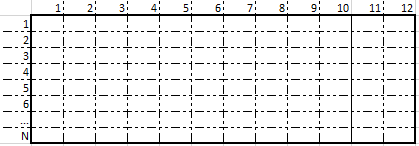
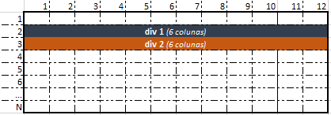

O Bootstrap funciona em cima de um sistema composto por linhas e colunas chamado grid system. Nesse sistema, o Bootstrap trata a área de exibição da aplicação da seguinte maneira:
Com isso, o Bootstrap cria uma grade virtual. Ele se orienta através dessa grade virtual gerada para posicionar os elementos HTML que possuam as classes disponibilizadas pelo arquivo CSS do Bootstrap.
É importante ressaltar que essa divisão é feita independente da resolução e/ou tamanho do dispositivo. A página sendo renderizada em uma smartTV ou em um smartphone, a tela sempre vai ser dividida em 12 colunas na vertical e em uma quantidade ilimitada de linhas.
Se estivéssemos em um desktop, por exemplo, a tela seria dividida de acordo com a ilustração abaixo:
Se estivéssemos em um celular, a divisão também aconteceria:
O Bootstrap trata a renderização dos componentes HTML de acordo com o grid system. O posicionamento dos componentes é feito em cima das linhas, indicando também quantas das 12 colunas que o componente deve ocupar no momento em que for renderizado.
Por exemplo: se quisermos criar duas divs, sendo que cada uma ocupe metade da tela, nós precisamos instruir ao Bootstrap que cada div ocupe 6 das 12 colunas que são criadas:
Como vimos anteriormente, o Bootstrap é fundamentado no conceito mobile-first e, por isso, possibilita a criação de layouts responsivos. Sendo assim, ainda nos baseando no exemplo anterior, pode ser que seja mais interessante exibir as divs anteriores na metade da tela quando estivermos em computadores, porém, quando a página for renderizada em um smartphone por exemplo, elas ocupem todas as 12 colunas e fiquem uma embaixo da outra.
Ilustrando o processo: em um computador, a página deveria ser exibida assim...
... mas em um smartphone ela precisaria ser exibida assim:
Perceba que, nesse nosso cenário, a maneira como os componentes HTML serão renderizados na tela depende da resolução e tamanho do dispositivo. Para conseguirmos lidar com isso, o Bootstrap trabalha em cima de outro conceito em conjunto com o grid system: as classes de dispositivos ou breakpoints.